Last updated: 2025-08-01
Checks: 7 0
Knit directory: InferOrder/
This reproducible R Markdown analysis was created with workflowr (version 1.7.1). The Checks tab describes the reproducibility checks that were applied when the results were created. The Past versions tab lists the development history.
Great! Since the R Markdown file has been committed to the Git repository, you know the exact version of the code that produced these results.
Great job! The global environment was empty. Objects defined in the global environment can affect the analysis in your R Markdown file in unknown ways. For reproduciblity it’s best to always run the code in an empty environment.
The command set.seed(20250707) was run prior to running
the code in the R Markdown file. Setting a seed ensures that any results
that rely on randomness, e.g. subsampling or permutations, are
reproducible.
Great job! Recording the operating system, R version, and package versions is critical for reproducibility.
Nice! There were no cached chunks for this analysis, so you can be confident that you successfully produced the results during this run.
Great job! Using relative paths to the files within your workflowr project makes it easier to run your code on other machines.
Great! You are using Git for version control. Tracking code development and connecting the code version to the results is critical for reproducibility.
The results in this page were generated with repository version 087d8d2. See the Past versions tab to see a history of the changes made to the R Markdown and HTML files.
Note that you need to be careful to ensure that all relevant files for
the analysis have been committed to Git prior to generating the results
(you can use wflow_publish or
wflow_git_commit). workflowr only checks the R Markdown
file, but you know if there are other scripts or data files that it
depends on. Below is the status of the Git repository when the results
were generated:
Ignored files:
Ignored: .DS_Store
Ignored: .Rhistory
Ignored: .Rproj.user/
Ignored: analysis/.DS_Store
Ignored: analysis/figure/
Ignored: code/.Rhistory
Untracked files:
Untracked: code/two_ordering_smoothEM.R
Untracked: various figures/
Unstaged changes:
Modified: code/general_EM.R
Note that any generated files, e.g. HTML, png, CSS, etc., are not included in this status report because it is ok for generated content to have uncommitted changes.
These are the previous versions of the repository in which changes were
made to the R Markdown
(analysis/explore_SmoothEM_Mixture.rmd) and HTML
(docs/explore_SmoothEM_Mixture.html) files. If you’ve
configured a remote Git repository (see ?wflow_git_remote),
click on the hyperlinks in the table below to view the files as they
were in that past version.
| File | Version | Author | Date | Message |
|---|---|---|---|---|
| Rmd | 087d8d2 | Ziang Zhang | 2025-08-01 | workflowr::wflow_publish("analysis/explore_SmoothEM_Mixture.rmd") |
| html | b4251d5 | Ziang Zhang | 2025-08-01 | Build site. |
| Rmd | 275d0d3 | Ziang Zhang | 2025-08-01 | workflowr::wflow_publish("analysis/explore_SmoothEM_Mixture.rmd") |
| html | a58de04 | Ziang Zhang | 2025-08-01 | Build site. |
| Rmd | 6c8b619 | Ziang Zhang | 2025-08-01 | workflowr::wflow_publish("analysis/explore_SmoothEM_Mixture.rmd") |
| html | 6095b41 | Ziang Zhang | 2025-08-01 | Build site. |
| Rmd | e8fa00c | Ziang Zhang | 2025-08-01 | workflowr::wflow_publish("analysis/explore_SmoothEM_Mixture.rmd") |
| html | 0fdf6de | Ziang Zhang | 2025-08-01 | Build site. |
| Rmd | fa43d76 | Ziang Zhang | 2025-08-01 | workflowr::wflow_publish("analysis/explore_SmoothEM_Mixture.rmd") |
| html | b1aaef7 | Ziang Zhang | 2025-08-01 | Build site. |
| html | 563dbc1 | Ziang Zhang | 2025-08-01 | Build site. |
| Rmd | f2d414e | Ziang Zhang | 2025-08-01 | workflowr::wflow_publish("analysis/explore_SmoothEM_Mixture.rmd") |
| html | cba36e1 | Ziang Zhang | 2025-08-01 | Build site. |
| Rmd | 8249f14 | Ziang Zhang | 2025-08-01 | workflowr::wflow_publish("analysis/explore_SmoothEM_Mixture.rmd") |
| html | 8b58637 | Ziang Zhang | 2025-08-01 | Build site. |
| Rmd | ff3f13f | Ziang Zhang | 2025-08-01 | workflowr::wflow_publish("analysis/explore_SmoothEM_Mixture.rmd") |
We consider the following problem.
Let \(\boldsymbol{x}_i \in \mathbb{R}^D\) denote observation \(i\) (e.g., a cell), where \(D\) is the total number of coordinates (e.g., genes). The data matrix \(\mathbf{X} \in \mathbb{R}^{N \times D}\) contains \(N\) observations, each with \(D\) coordinates.
We define a partition of the coordinates into two disjoint subsets: \[ \mathcal{J}_1, \mathcal{J}_2 \subseteq \{1, \dots, D\}, \quad \mathcal{J}_1 \cup \mathcal{J}_2 = \{1, \dots, D\}, \quad \mathcal{J}_1 \cap \mathcal{J}_2 = \emptyset. \]
Hence, each vector \(\boldsymbol{x}_i\) can be decomposed as \[ \boldsymbol{x}_i = \left( \boldsymbol{x}_i^{(1)}, \boldsymbol{x}_i^{(2)} \right), \] where \[ \boldsymbol{x}_i^{(1)} = (x_{ij})_{j \in \mathcal{J}_1} \in \mathbb{R}^{|\mathcal{J}_1|}, \quad \boldsymbol{x}_i^{(2)} = (x_{ij})_{j \in \mathcal{J}_2} \in \mathbb{R}^{|\mathcal{J}_2|}. \]
For each partition \(j \in \{1,2\}\), we assume a smooth latent structure such that \[ \boldsymbol{x}_i^{(j)} \mid z_i^{(j)} \sim \mathcal{N}\left( \boldsymbol{\mu}^{(j)}(z_i^{(j)}),\; \boldsymbol{\Sigma}^{(j)} \right), \quad z_i^{(j)} \in \{1, \dots, K_j\}. \]
Here, \(z_i^{(j)}\) is a discretized latent index representing the position of observation \(i\) along the latent ordering \(j\). The function \(\boldsymbol{\mu}^{(j)}(\cdot)\) defines a smooth mean curve over \(K_j\) grid points. The covariance matrix \(\boldsymbol{\Sigma}^{(j)}\) is typically assumed to follow a shared and diagonal structure (i.e., EEI) for simplicity.
Our target is to obtain the partitions \(\mathcal{J}_1\) and \(\mathcal{J}_2\), the latent orderings \(z_i^{(1)}\) and \(z_i^{(2)}\) (through each assignment matrix \(\boldsymbol{\Gamma}^{(j)}\)), and the smooth mean curves \(\boldsymbol{\mu}^{(1)}(\cdot)\) and \(\boldsymbol{\mu}^{(2)}(\cdot)\).
If the partition \(\mathcal{J}_1\) and \(\mathcal{J}_2\) are known, we can apply the standard smooth EM algorithm to estimate the parameters in each partition separately. However, the partition is unknown, and there are \(2^D\) possible partitions, which is computationally infeasible to exhaustively search for large \(D\). Therefore, we propose the following iterative algorithm that jointly infers the partition and the model parameters in a greedy manner.
Let \(\mathcal{J}_1^{(t)}\) and \(\mathcal{J}_2^{(t)}\) denote the partition at iteration \(t\). Each iteration then proceeds in three steps:
We initialize a partition of the coordinates into two groups, for example by random assignment: \[ \mathcal{J}_1^{(0)} \cup \mathcal{J}_2^{(0)} = \{1, \dots, D\}, \quad \mathcal{J}_1^{(0)} \cap \mathcal{J}_2^{(0)} = \emptyset. \]
Given the current partition \(\mathcal{J}_1^{(t)}, \mathcal{J}_2^{(t)}\), we fit two separate smooth EM models to the data:
Each of these models can be solved using our current smooth EM algorithm, under a specified prior (e.g., random walk).
Here the most important quantities are \(\boldsymbol{\Gamma}^{(j)}\), which essentially represent the latent positions of the observations along the latent ordering \(j\).
Each coordinate \(j \in \{1, \dots, D\}\) is re-assigned to either partition \(\mathcal{J}_1\) or \(\mathcal{J}_2\) based on the current position matrices \(\boldsymbol{\Gamma}^{(1)}\) and \(\boldsymbol{\Gamma}^{(2)}\), to optimize the log-posterior density of the data under each model.
Let \(\boldsymbol{X}_{.j} \in \mathbb{R}^N\) denote the \(j\)th column of the data matrix. For each \(j\), we compute the (negative) log-posterior density under each ordering: \[ \mathcal{E}_j^{(1)} = \text{negative posterior under ordering 1}, \quad \mathcal{E}_j^{(2)} = \text{negative posterior under ordering 2}. \]
Specifically, the negative log-posterior density for ordering \(a\) is given by: \[ \mathcal{E}_j^{(a)} = \underbrace{ \sum_{i=1}^N \sum_{k=1}^{K_a} \Gamma_{ik}^{(a)} \frac{\left(\mathbf{X}_{ij} - \mu_{jk}^{(a)}\right)^2}{2\, (\sigma_j^{(a)})^2} }_{\text{data fit}} \;+\; \underbrace{ \sum_{i=1}^N \sum_{k=1}^{K_a} \Gamma_{ik}^{(a)} \log\left(\sigma_j^{(a)}\right) }_{\text{obs. norm. const.}} \;+\; \underbrace{ \frac{1}{2} (\boldsymbol{\mu}_j^{(a)})^\top Q^{(a)} \boldsymbol{\mu}_j^{(a)} }_{\text{smoothness penalty}} \;+\; \underbrace{ \frac{K_a}{2} \log(2\pi) - \frac{1}{2} \log \det(Q^{(a)}) }_{\text{prior norm. const.}}. \]
We then update the assignment as follows: \[ j \in \mathcal{J}_1^{(t+1)} \quad \text{if} \quad \mathcal{E}_j^{(1)} < \mathcal{E}_j^{(2)}, \quad j \in \mathcal{J}_2^{(t+1)} \quad \text{otherwise}. \]
This procedure is iterated until convergence of the coordinate assignments.
source("./code/prior_precision.R")
source("./code/general_EM.R")
source("./code/two_ordering_smoothEM.R")
source("./code/plot_ordering.R")
library(tidyverse)
library(ggplot2)
library(reshape2)
library(tidyr)
library(dplyr)
library(MASS)
library(fields) # for rdist and MaternIn this experiment, we generate synthetic data with two distinct latent orderings, each affecting a disjoint subset of the coordinates.
Specifically, we consider \(D = 16\) coordinates, partitioned as follows:
The data matrix consists of \(N = 1000\) observations. For each latent ordering \(t^{(j)}\), we sample \(t^{(j)}_i \sim \text{Uniform}(0, 10)\) independently for \(i = 1, \dots, N\), and generate the smooth function in each coordinate as independent Matérn processes.
Below we construct the data:
N <- 1000; D <- 16
set.seed(1234)
t1 <- runif(1000, min = 0, max = 10)
t2 <- runif(1000, min = 0, max = 10)
# GP kernel function using Matern
matern_cov <- function(t, range = 5, smoothness = 2.5, variance = 3.0) {
dists <- rdist(t, t)
cov_mat <- Matern(dists, range = range, smoothness = smoothness)
cov_mat * variance
}
# Generate first 8 coordinates (dependent on t1)
Sigma1 <- matern_cov(matrix(t1, ncol = 1))
X1 <- mvrnorm(n = 8, mu = rep(0, N), Sigma = Sigma1)
X1 <- t(X1) # Make it N x 8
# Make X1 positive
X1 <- X1 + abs(min(X1)) + 1 # Shift to make all values positive
# Generate second 8 coordinates (dependent on t2)
Sigma2 <- matern_cov(matrix(t2, ncol = 1))
X2 <- mvrnorm(n = 8, mu = rep(0, N), Sigma = Sigma2)
X2 <- t(X2) # Make it N x 8
# Make X2 positive
X2 <- X2 + abs(min(X2)) + 1 # Shift to make all values positive
X <- cbind(X1, X2) # Combine the two sets of coordinates
# permute the columns
permut_cols <- sample(1:16, 16)
X <- X[, permut_cols] # Permute the columns of X
# Add some noise
X <- X + matrix(rnorm(N * D, mean = 0, sd = 0.05), nrow = N, ncol = D)Let’s visualize the generated data against the latent orderings \(t^{(1)}\) and \(t^{(2)}\).
# Plot the first 8 coordinates
par(mfrow = c(2,4))
for (i in 1:8) {
plot(t1, X1[, i],
cex = 0.3,
main = paste("Coordinate", i),
xlab = "t1", ylab = paste("X1[", i, "]"))
}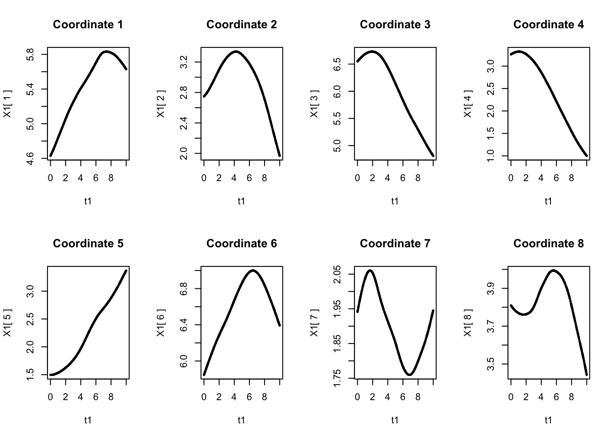
par(mfrow = c(1,1))
# Plot the second 8 coordinates
par(mfrow = c(2,4))
for (i in 1:8) {
plot(t2, X2[, i],
cex = 0.3,
main = paste("Coordinate", i + 8),
xlab = "t2", ylab = paste("X2[", i, "]"))
}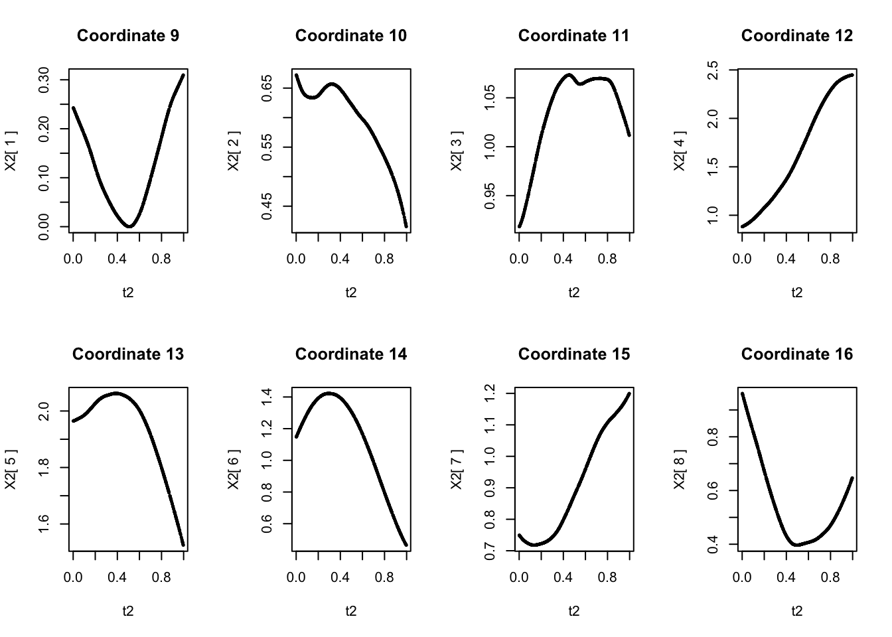
par(mfrow = c(1,1))Let’s apply the smooth EM algorithm to infer the two latent orderings, with the second order random walk prior for \(\boldsymbol{\mu}^{(1)}\) and \(\boldsymbol{\mu}^{(2)}\).
set.seed(123)
res <- two_ordering_smoothEM(
X = X, K = 50,
modelName = "EEI",
init_method = "pca",
init_coord_assign = rep(c(1,2), each = ncol(X) / 2),
make_Q_prior = make_random_walk_precision,
lambda_vec = c(50, 50),
relative_lambda = TRUE,
rw_order_vec = c(2, 2),
reassign_by = "posterior",
max_iter = 100,
max_iter_EM = 200,
verbose = TRUE
)Iteration 1: reassigned 6 coordinates (J1 = 8, J2 = 8)
Iteration 2: reassigned 0 coordinates (J1 = 8, J2 = 8)Let’s check the inferred latent orderings.
sort(permut_cols[res$J1])[1] 1 2 3 4 5 6 7 8sort(permut_cols[res$J2])[1] 9 10 11 12 13 14 15 16The first 8 coordinates are correctly assigned to one partition, and the second 8 coordinates are assigned to the other partition.
Let’s visualize the inferred \(\boldsymbol{\mu}^{(1)}\):
all_coordinates_1 <- permut_cols[res$J1]
par(mfrow = c(2, 4))
for (i in 1:length(res$result1$params$mu[[1]])) {
index <- order(all_coordinates_1)[i]
mean_vec <- sapply(res$result1$params$mu, function(mu_k) mu_k[[index]])
plot((1:50)/5, mean_vec, type = 'o',
cex = 0.5,
main = paste("Coordinate", all_coordinates_1[index]),
xlab = "discretized t1", ylab = paste("mu"))
points(t1,
X[, permut_cols == all_coordinates_1[index]],
col = rgb(1, 0.75, 0.8, alpha = 0.8),
cex = 0.2)
}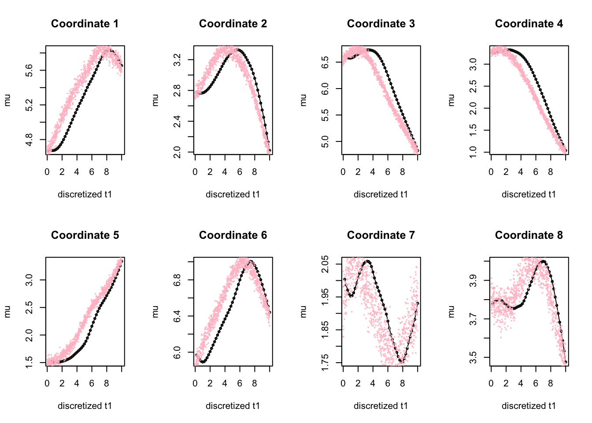
par(mfrow = c(1, 1))Also visualize the inferred \(\boldsymbol{\mu}^{(2)}\):
all_coordinates_2 <- permut_cols[res$J2]
par(mfrow = c(2, 4))
for (i in 1:length(res$result2$params$mu[[1]])) {
index <- order(all_coordinates_2)[i]
mean_vec <- sapply(res$result2$params$mu, function(mu_k) mu_k[[index]])
plot((1:50)/5, mean_vec, type = 'o',
cex = 0.5,
main = paste("Coordinate", all_coordinates_2[index]),
xlab = "discretized t2", ylab = paste("mu"))
points((10 - t2), type = 'p',
X[, permut_cols == all_coordinates_2[index]],
col = rgb(1, 0.75, 0.8, alpha = 0.8),
cex = 0.2)
}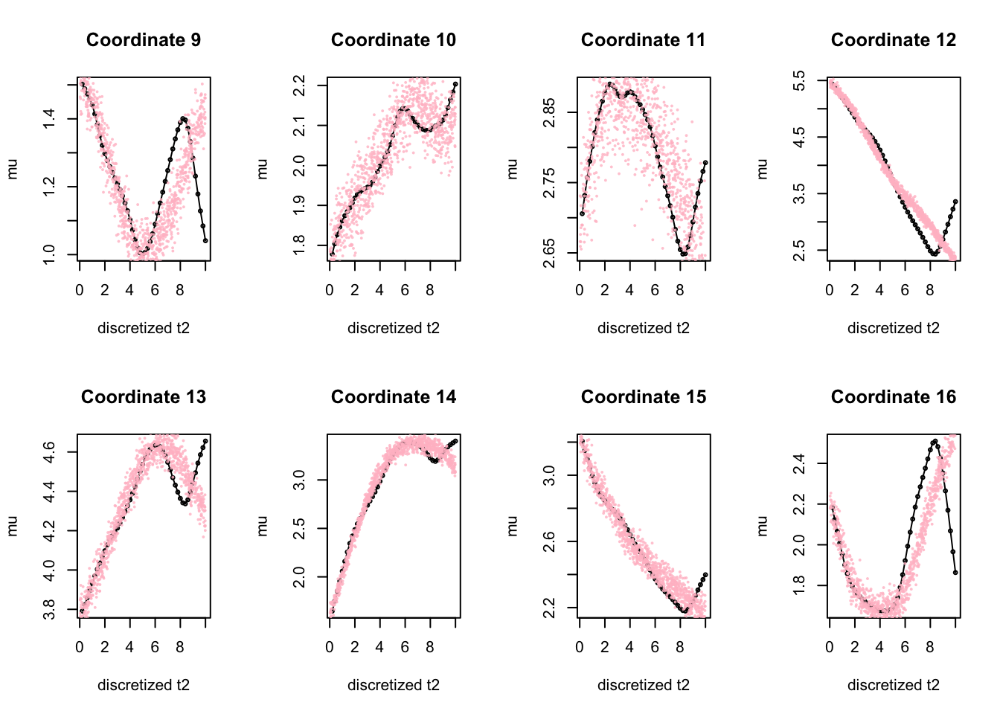
par(mfrow = c(1, 1))Finally, let’s try to examine the structure plot. To start with, we will take a look at the unordered data matrix.
rownames(X) <- paste0("Cell", 1:nrow(X))
plot_structure(X)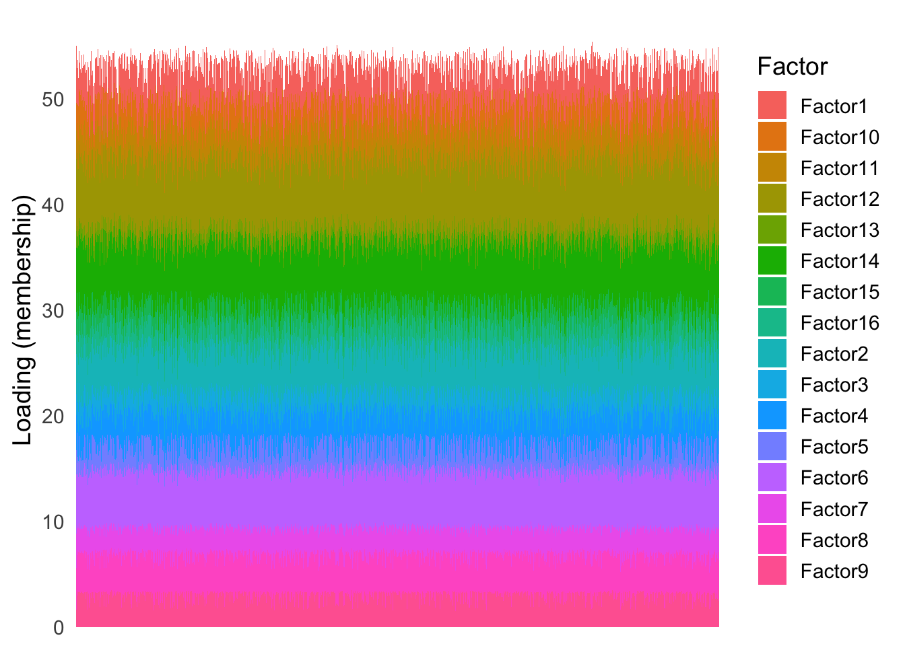
| Version | Author | Date |
|---|---|---|
| b4251d5 | Ziang Zhang | 2025-08-01 |
Now, let’s order them based on the first latent ordering:
position_1 <- apply(res$Gamma1, 1, which.max)
X_J1 <- X[, res$J1]
X_J1_order <- order(position_1)
plot_structure(X_J1, order = rownames(X_J1)[X_J1_order])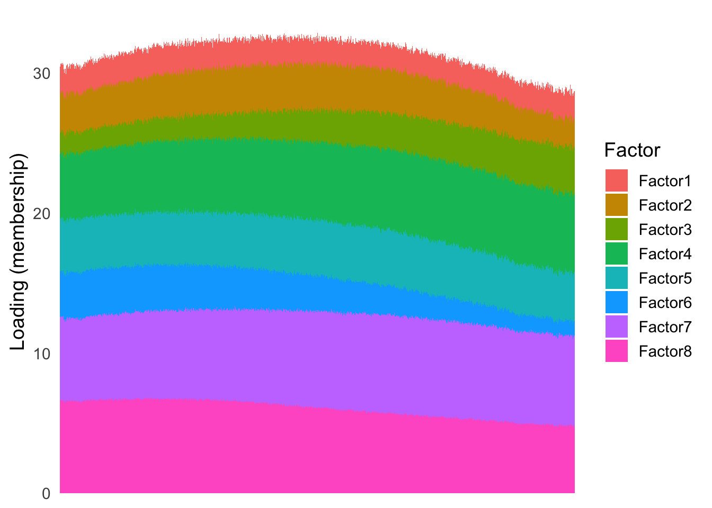
| Version | Author | Date |
|---|---|---|
| b4251d5 | Ziang Zhang | 2025-08-01 |
As well as the second latent ordering:
position_2 <- apply(res$Gamma2, 1, which.max)
X_J2 <- X[, res$J2]
X_J2_order <- order(position_2)
plot_structure(X_J2, order = rownames(X_J2)[X_J2_order])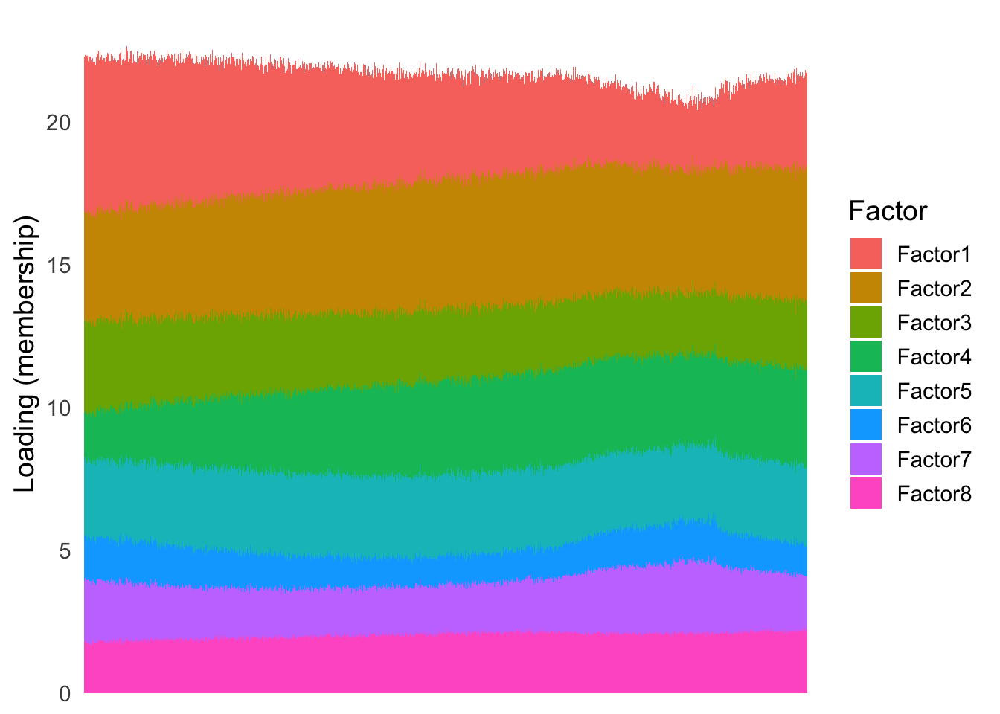
| Version | Author | Date |
|---|---|---|
| b4251d5 | Ziang Zhang | 2025-08-01 |
Now, let’s see how this approach applies to the pancreas dataset, to distinguish between cell-type factors and batch-type factors.
library(tibble)
library(Rtsne)
library(umap)
set.seed(1)
load("./data/loading_order/pancreas_factors.rdata")
load("./data/loading_order/pancreas.rdata")
cell_type_factors <- c(3,8,9,12,17,18,20,21)
batch_type_factors <- c(1, 2, 4, 5, 6, 7, 11, 22)
all_factors <- c(cell_type_factors, batch_type_factors)
cells <- subsample_cell_types(sample_info$celltype,n = 500)
Loadings <- fl_snmf_ldf$L[cells,all_factors]
celltype <- as.character(sample_info$celltype[cells])
names(celltype) <- rownames(Loadings)
batchtype <- as.character(sample_info$tech[cells])
names(batchtype) <- rownames(Loadings)Based on the visual assessment from this analysis, we select the first 8 factors to be cell-type factors, and the remaining 8 factors to be batch-type factors.
Let’s permute the columns of the loading matrix to make it unordered:
permut_cols <- sample(1:ncol(Loadings), ncol(Loadings))
Loadings <- Loadings[, permut_cols]Take a look at the unordered structure plot:
plot_structure(Loadings)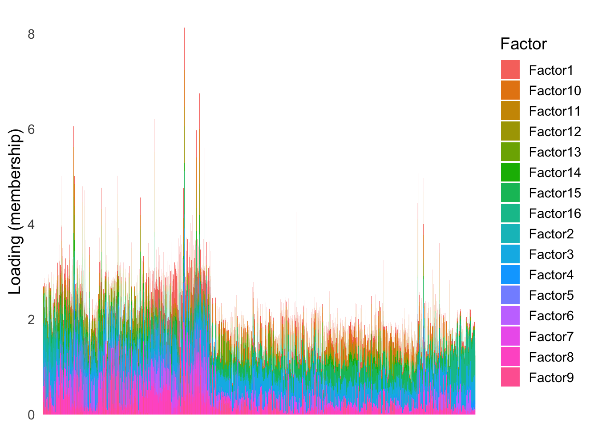
| Version | Author | Date |
|---|---|---|
| b4251d5 | Ziang Zhang | 2025-08-01 |
Here it is natural to expect the cell-type factors to evolve more smoothly than the batch-type factors. Therefore, when applying the smooth EM algorithm, we will use the second order random walk prior for the first latent space, and the first order random walk prior for the second latent space.
resPancreas <- two_ordering_smoothEM(
X = Loadings, K = 50,
init_method = "pca",
init_coord_assign = rep(c(1,2), each = ncol(Loadings) / 2),
modelName = "EEI",
make_Q_prior = make_random_walk_precision,
lambda_vec = c(50, 50),
relative_lambda = TRUE,
rw_order_vec = c(2, 2),
reassign_by = "posterior",
max_iter = 100,
max_iter_EM = 1,
verbose = TRUE
)Iteration 1: reassigned 3 coordinates (J1 = 8, J2 = 8)
Iteration 2: reassigned 2 coordinates (J1 = 5, J2 = 11)
Iteration 3: reassigned 0 coordinates (J1 = 5, J2 = 11)Let’s check the inferred latent orderings.
sort(permut_cols[resPancreas$J1])[1] 1 9 11 13 16sort(permut_cols[resPancreas$J2]) [1] 2 3 4 5 6 7 8 10 12 14 15Let’s take a look at the structure plot ordered by each latent ordering.
position_1 <- apply(resPancreas$Gamma1, 1, which.max)
Loadings_J1 <- Loadings[, resPancreas$J1]
Loadings_J1_order <- order(position_1)
plot_structure(Loadings_J1, order = rownames(Loadings_J1)[Loadings_J1_order],
plot_name = "Ordered by Latent Ordering 1")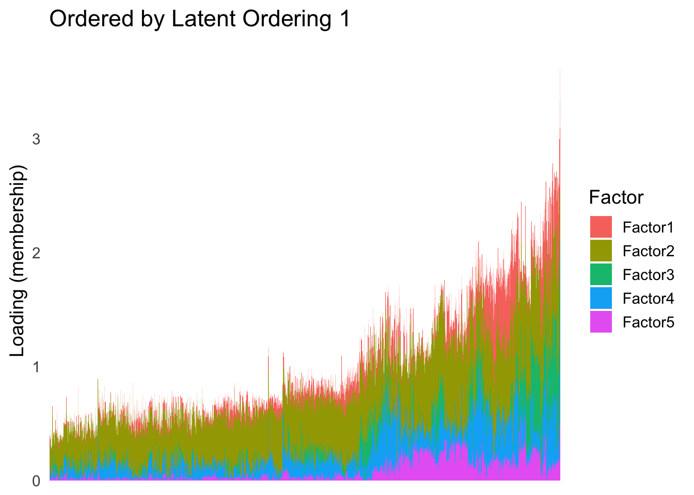
| Version | Author | Date |
|---|---|---|
| b4251d5 | Ziang Zhang | 2025-08-01 |
plot_highlight_types(type_vec = celltype,
subset_types = unique(celltype),
order_vec = rownames(Loadings_J1)[Loadings_J1_order],
other_color = "white"
)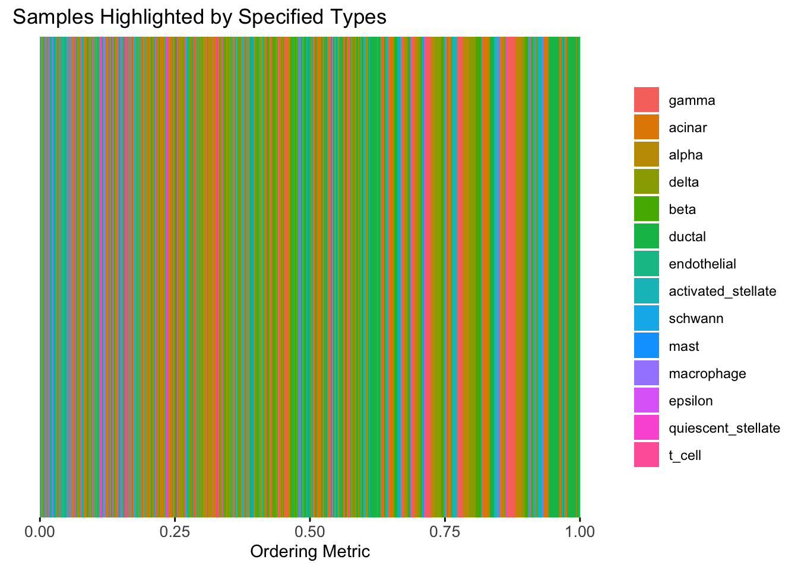
As well as the second latent ordering:
position_2 <- apply(resPancreas$Gamma2, 1, which.max)
Loadings_J2 <- Loadings[, resPancreas$J2]
Loadings_J2_order <- order(position_2)
plot_structure(Loadings_J2, order = rownames(Loadings_J2)[Loadings_J2_order],
plot_name = "Ordered by Latent Ordering 2")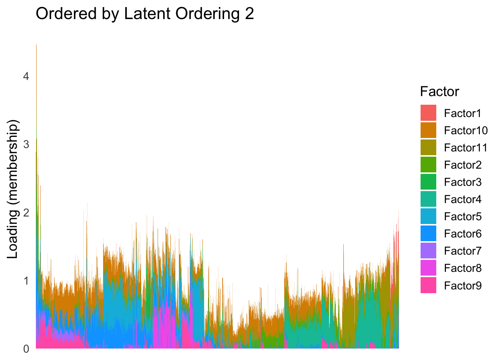
| Version | Author | Date |
|---|---|---|
| b4251d5 | Ziang Zhang | 2025-08-01 |
plot_highlight_types(type_vec = batchtype,
subset_types = unique(batchtype),
order_vec = rownames(Loadings_J2)[Loadings_J2_order],
other_color = "white"
)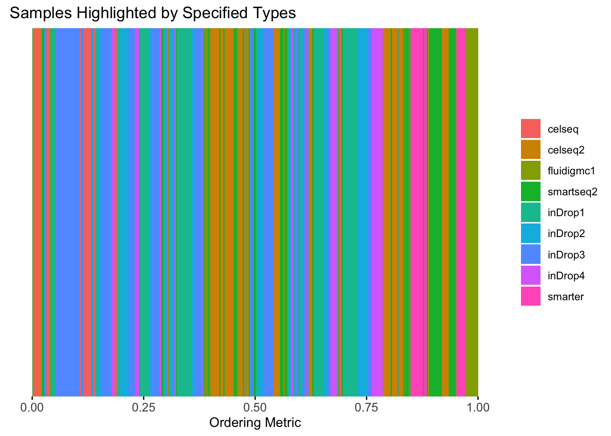
sessionInfo()R version 4.3.1 (2023-06-16)
Platform: aarch64-apple-darwin20 (64-bit)
Running under: macOS 15.5
Matrix products: default
BLAS: /Library/Frameworks/R.framework/Versions/4.3-arm64/Resources/lib/libRblas.0.dylib
LAPACK: /Library/Frameworks/R.framework/Versions/4.3-arm64/Resources/lib/libRlapack.dylib; LAPACK version 3.11.0
locale:
[1] en_US.UTF-8/en_US.UTF-8/en_US.UTF-8/C/en_US.UTF-8/en_US.UTF-8
time zone: America/Chicago
tzcode source: internal
attached base packages:
[1] stats graphics grDevices utils datasets methods base
other attached packages:
[1] umap_0.2.10.0 Rtsne_0.17 fields_16.2 viridisLite_0.4.2
[5] spam_2.11-0 MASS_7.3-60 reshape2_1.4.4 lubridate_1.9.3
[9] forcats_1.0.0 stringr_1.5.1 dplyr_1.1.4 purrr_1.0.4
[13] readr_2.1.5 tidyr_1.3.1 tibble_3.2.1 tidyverse_2.0.0
[17] ggplot2_3.5.2 Matrix_1.6-4 mvtnorm_1.3-1 matrixStats_1.4.1
[21] workflowr_1.7.1
loaded via a namespace (and not attached):
[1] dotCall64_1.2 gtable_0.3.6 xfun_0.52 bslib_0.9.0
[5] processx_3.8.6 lattice_0.22-6 callr_3.7.6 tzdb_0.5.0
[9] vctrs_0.6.5 tools_4.3.1 ps_1.9.1 generics_0.1.4
[13] pkgconfig_2.0.3 RColorBrewer_1.1-3 lifecycle_1.0.4 compiler_4.3.1
[17] farver_2.1.2 git2r_0.33.0 getPass_0.2-4 httpuv_1.6.16
[21] htmltools_0.5.8.1 maps_3.4.2 sass_0.4.10 yaml_2.3.10
[25] later_1.4.2 pillar_1.10.2 jquerylib_0.1.4 whisker_0.4.1
[29] openssl_2.2.2 cachem_1.1.0 RSpectra_0.16-2 tidyselect_1.2.1
[33] digest_0.6.37 stringi_1.8.7 labeling_0.4.3 rprojroot_2.0.4
[37] fastmap_1.2.0 grid_4.3.1 cli_3.6.5 magrittr_2.0.3
[41] withr_3.0.2 scales_1.4.0 promises_1.3.3 timechange_0.3.0
[45] rmarkdown_2.28 httr_1.4.7 reticulate_1.42.0 png_0.1-8
[49] askpass_1.2.1 hms_1.1.3 evaluate_1.0.3 knitr_1.50
[53] rlang_1.1.6 Rcpp_1.0.14 glue_1.8.0 rstudioapi_0.16.0
[57] jsonlite_2.0.0 R6_2.6.1 plyr_1.8.9 fs_1.6.6